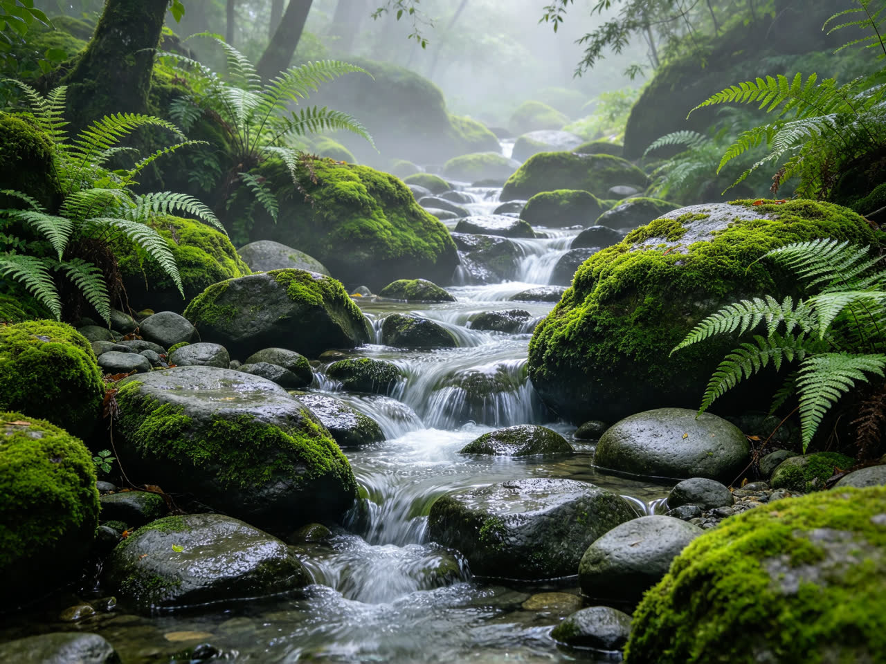

Habitat 01
Moss carpet
Continuous green ground cover that holds moisture between rains and shields the soil from drying wind.

Each habitat is recorded, mapped, and allowed to spread on its own timetable.
Continuous green ground cover that holds moisture between rains and shields the soil from drying wind.
Stones, shade, and slow water keep the lower woods cool and give ferns a permanent damp edge.
Tall trunks and deep shade anchor the upper canopy and drop the slow, steady litter the floor feeds on.
Open light where seedlings harden off before the shade returns, and where small native flowers hold through summer.